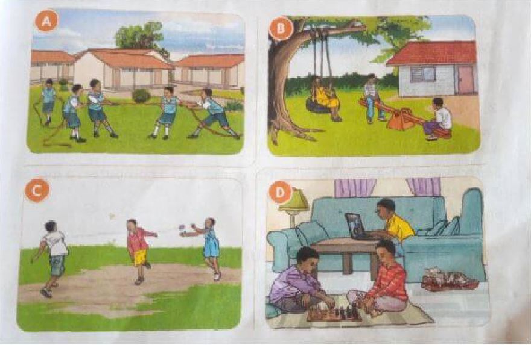

To grow healthy, we need food, clothing, play, rest, and shelter. Shelter is housing.
Which games are played in our locality?
Games played in our locality are football, athletics, tug of war, swinging, playing darts, and playing games on computers.
Which items do we use during playing?
Items we use when playing are:
- Ropes
- Computers
- Bean bags
- Balls
- Sacks
- Phones
- Mats
- Marbles
What are the qualities of a good play item?
- Should be durable
- Stronger
- Should be smooth, not rough that can hurt people
- Should be safe to play with
How do we make play items?
Making a ball using locally available materials
Materials needed:
- Pieces of cloth or old newspapers
- An old clean sock
- String
Procedure:
- Take the old sock.
- Put pieces of newspaper or cloth in the old sock. Push them to the bottom of the sock.
- Mold the pieces into the shape of a ball.
- Twist the sock and turn the top side inside out. Tuck in the ball.
- Tie the end with a string or make a knot.
How do we take care of our play items?
- Play items should be kept well after use.
- Arrange them well on the shelves or put them in cartons neatly.
- Always keep them in a clean, dry place.
Safety and security during play
- Remove items like stones, sticks, and broken glass from where you are playing.
- Avoid playing near dangerous areas like water pools and holes.
- Do not play with damaged play items.
- Do not play with dangerous objects.
- Never push other children out of a game.
- Always wait for your turn.
- Always keep your play items safely after playing.
Exercise
-
a. Write down three things you need to grow healthy.
b. Write down why each of the things is important.
- Your teacher has asked you to bring the following materials to class: old pieces of clothes, a string, a rope, green sticks.
- Write three play items you can make using the materials.
- Which games can you play using the play items?
- Write two things we should think of when buying a toy.
- Make a poster on how we can prevent accidents during play. Show your poster to other learners in class.
- Write three ways we should care for a ball.